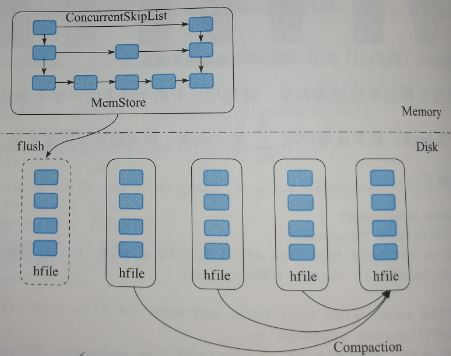
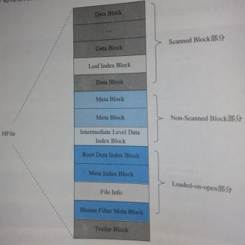

column family和LSM-tree #
column family本质上是一颗LSM-tree。

- LSM-Tree的核心思想就是将写入推迟(Defer)并转换为批量(Batch)写，首先将大量写入缓存在内存，当积攒到一定程度后，将他们批量写入文件中，这要一次I/O可以进行多条数据的写入，充分利用每一次I/O。
- LSM-Tree是对写操作友好的索引结构； 将写入操作全部转化为磁盘的顺序写入。一次随机IO写入转换成一次顺序IO写入（HLog顺序写）和一次内存写入（MemStore写入）。
- 为了提高读取效率， LSM-tree设计了异步的Compaction， 小文件合并成大文件（归并排序）。
HBase的存储[lsm-tree] #
- MemStore 由两个ConcurrentSkipListMap实现（双缓冲）; ConcurrentSkipListMap A异步flush罗盘成HFile; **HDFS只允许顺序读写，MemStore在落盘生成HFile之前完成kv的排序； **
- HFile HFile Data Block（文件读取的最小单元）内的kv是按key排序的索引树，对读友好； HFile Index Block的索引结构分为两种: V1 单层索引， V2 多级索引（只加载部分索引，降低内存使用） HDFS的Block默认是64M，128M；HBase的Block默认是64K；

| Block Type | 基本介绍 |
|---|---|
| Data Block | 用户Key-Value |
| Meta Block | Bloom过滤器相关元数据 |
| Root Index | HFile索引树根索引 |
| Intermediate Level Index | HFile索引树中间层级索引 |
| Leaf Level Index | HFile索引树叶子索引 |
参考 #
- 【Paper笔记】The Log structured Merge-Tree（LSM-Tree）
- 《Hbase原理和实践》 胡争 范欣欣 第1,2,5,7，8章